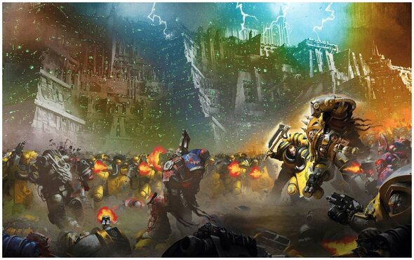
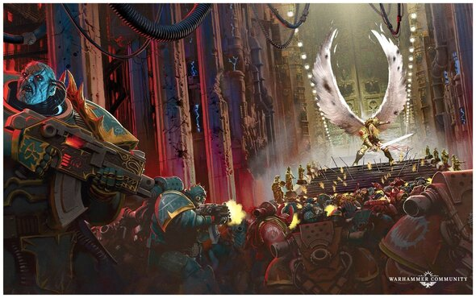
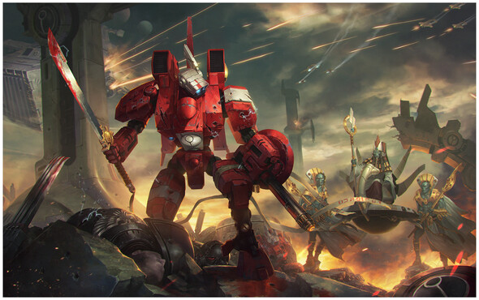

Black Library
О нас
Каталог
Популярные серии
Авторизация

"Ересь Хоруса" - эпический цикл научно-фантастических книг, созданный командой авторов. В центре сюжета - война в Галактической Империи, разрывающая ее до самых основ. Столкновение имперской лояльности и предательства обостряется с появлением Хаоса и вмешательством могущественных богов в судьбу вселенной.
Перейти в каталог
"Осада Терры" эпический цикл книг Дэна Абнетта. Он рассказывает о битве за планету Терру, по событиям которой прослеживается захват Хаосом культовой фракции известных как Черные Легионы и их попытка уничтожения Империи Человечества.
Перейти в каталог


Трилогия "Зоркий Взгляд" Филла Келли повествует о судьбе великого главнокомандующего армиями империи Тау, о его отказе от власти касты эфирных и отходу от путей Высшего Блага, формированию команды знаменитой "восьмерки" и познания темных глубин варпа.
Перейти в каталог